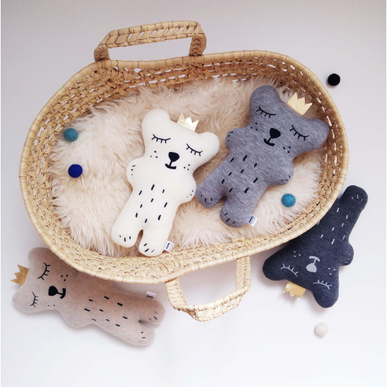
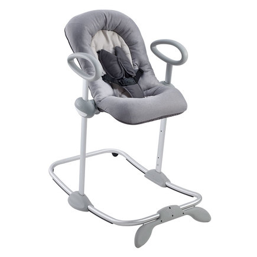
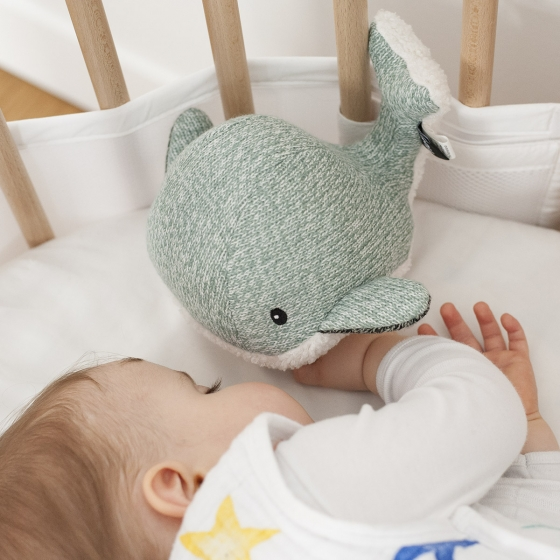
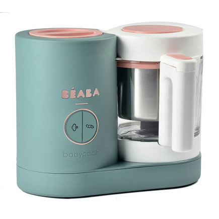
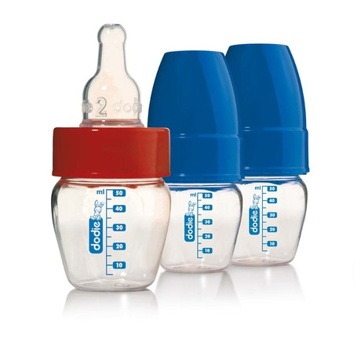
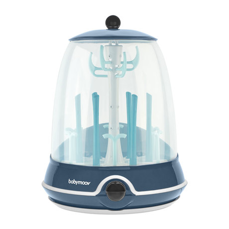
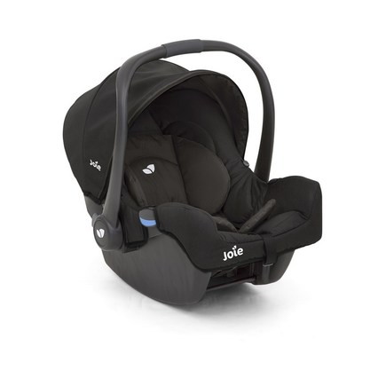
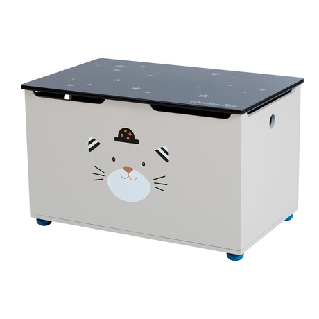
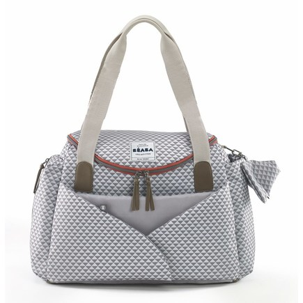

| Nom |
Image |
Categorie |
Description |
Lien |
| Peluche ours endormi |

|
Jouets |
Peluche ours endormi extra doux avec sa couronne dorée Disponible
en deux coloris : Alma (blanc), Eli (Gris clair) Détails brodés,
finitions faites à la main Composition : 100% Polyester
(rembourrage) Hauteur : 20 cm, Largeur : 12 cm Lavage en machine
programme délicat à 30°C maximum.
|
lien
|
| Transat Up&Down III Heather Grey |
 |
Chambre |
Le transat se règle sur 4 hauteurs grâce au système breveté UP &
DOWN - Réglage par simple pression. L’enfant peut ainsi participer
pleinement à la vie qui l’entoure. Positions propices à la
relaxation ou à l’observation. Position haute pour soulager le dos
des parents. 3 positions d’inclinaison sont disponibles et le
dossier du transat est manipulable d’une seule main. Il possède un
harnais de sécurité 5 points. Son assise est confortable et le
coussin est déhoussable, vous pourrez ainsi personnaliser votre
Transat Up&Down III. Ergonomique et très confortable pour le
nouveau-né. Cale tête intégré pour permettre un maintien optimal.
Utilisable de 0 à 3 mois.
|
lien
|
| peluche bruit blanc |

|
Jouets |
Une peluche très douce qui imite des sons rassurants (bruits
blancs): un cours d’eau, le battement de cœur et deux douces
mélodies au piano. Elle se déclenche automatiquement lorsque bébé
pleure. Fonction timer (15, 30 ou 60 minutes). Deux modèles :
Baleine (Menthe) 21 x 13 x 20 cm et Pieuvre (Gris).
|
lien
|
| Babycook NEO Eucalyptus |

|
Electroménager |
ROBOT 4 EN 1 NOUVELLE GÉNÉRATION CUIT À LA VAPEUR, MIXE,
DÉCONGÈLE, RÉCHAUFFE. CONTENANCE XXL. Les + produit : - Cuisine
saine et respectueuse de l’environnement et de la qualité
nutritionnelle des aliments. - Texture des préparations homogène
et adaptée aux différentes étapes de la diversification
alimentaire de bébé. - Cuisson vapeur rapide : préserve les
saveurs et les vitamines. - Mixage des aliments sur mesure, pour
une texture adaptée à l’âge de l’enfant.
|
lien
|
|
Micro biberon 50ml tétine 3 vitesses débit 1
|

|
Nourriture |
MICRO BIBERON 50ML TÉTINE 3 VITESSES DÉBIT 1 Les + produit: Le
Micro biberon 50 ml a été spécialement conçu pour la prise de
médicaments, vitamines ou jus de fruits. Vendu avec une tétine 3
vitesses 1er âge en silicone à embout rond (bout cerise),
parfaitement adaptée au palais des bébés de moins de 4 mois. La
tétine est munie d'un système anti-aérophagie pour le plus grand
confort de bébé. Incassable, léger et très pratique le micro
biberon sera idéal pour les petites soifs de bébé.
|
lien
|
| Stérilisateur Electrique Turbo Vapeur |

|
Electroménager |
LE STÉRILISATEUR ÉLECTRIQUE TURBO VAPEUR DE BABYMOOV VOUS GARANTIT
UNE STÉRILISATION AU COEUR MÊME DE VOS BIBERONS, TÉTINES ET
TIRE-LAITS ! Le Turbo Steam(+). 2 en 1 stérilise et se transforme
en égouttoir pour biberons .En 6 minutes seulement, vous
stérilisez biberons, tétines, capuchons et même tire-lait. Grâce à
sa technologie brevetée, le Turbo Steam(+) diffuse une vapeur de
95° au cœur de vos biberons. Il est très simple d'utilisation. Le
Turbo Steam(+) s'arrête automatiquement. Il peut contenir jusqu'à
6 biberons mais également tétines, tire-lait et autres accessoires
qui conviennent à la stérilisation.
|
lien
|
| Siege auto gr0+ GEMM Ember |

|
Déplacement |
LA COQUE INDISPENSABLE, AVEC OPTION ISOFIX. CE COMPAGNON MALIN DES
POUSSETTES JOIE EST UN PETIT COCON DE SÛRETÉ POUR LES SORTIES À
PIEDS OU EN VOITURE. Les + produit : - Protections latérales
renforcées - Insert naissance confortable pour les nouveaux-nés
(amovible) - Base arrondie - Entièrement déhoussable - Canopy
réglable et amovible - Poignée anti-dérapante orientable - Base
IsoFix ou ceinture de sécurité - Harnais 5 points avec protections
moltonnées - Compatible avec les poussettes JOIE et les poussettes
à fixations Maxi-Cosi® - Conforme pour voyager en avion
|
lien
|
| Coffre à jouets Les Moustaches |

|
Jouets |
POUR RANGER TOUS SES JOUETS, UN COFFRE DÉCORATIF DE BELLE
CONTENANCE, EN BOIS PEINT AUX COULEURS ET ILLUSTRATIONS DE LA
GAMME. Il est muni d'un vérin de sécurité pour accompagner le
mouvement du couvercle et conçu pour préserver les petites mains.
|
lien
|
| Sac à langer sydney 2 PLAY PRINT Grey |

|
Déplacement |
Système d’attache poussette intégré : Anses élastiques qui
s’adaptent à la majorité des poussettes avec poignées ou guidon.
Espace à langer «cocoon» à l’avant du sac : Tapis à langer
spacieux et confortable. Les avantages du sac à langer Sydney :
Très grande ouverture sur toute la longueur du sac : Pour un accès
facile et un rangement rapide de toutes les affaires. Multiples
rangements (Espace soin, repas et parents dédiés) : Un sac pour
transporter aussi bien les affaires des parents (téléphone, clefs,
porte-monnaie… ) que celles de l’enfant (vêtements…). Anses de
transport : Longueur adaptée pour un portage épaule confortable.
Trousse de rangement et protection pour sucettes : Forme berlingot
avec fermeture clip. Mousqueton pour l’accrocher au sac lors des
déplacements. Accessoires : Trousse de protection et transport
pour sucettes, matelas à langer amovible.
|
lien
|